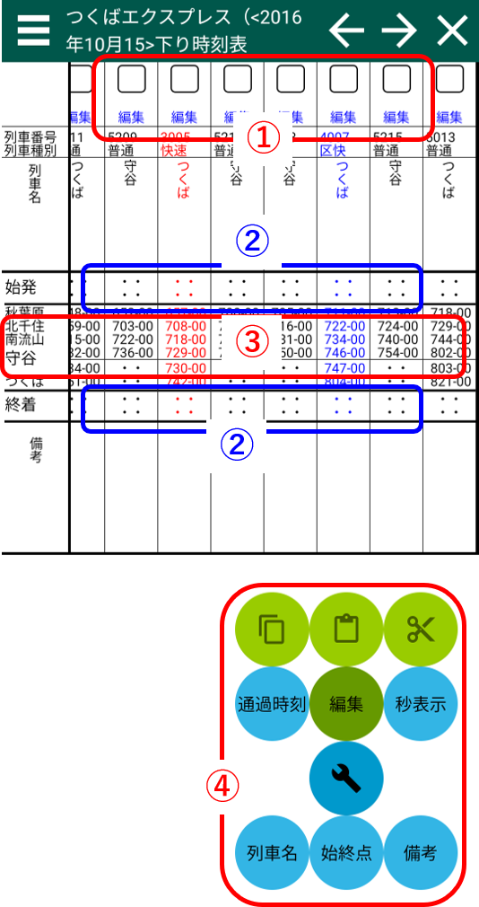

路線時刻表ヘルプ
ここでは路線時刻表について紹介します。スクショの番号の対応した説明があります。 
①：列車を編集する。
列車編集画面を開きます。この項目は、時刻表オプションの「編集」ボタンがONになっているときのみ有効になります。
②：始発・終着
路線外始発終着駅が設定されているときに使われます。③：時刻表部分
- 時刻表示部分をダブルタップすると、駅詳細ダイアログが開きます。 ここから駅時刻表に移動したり、駅時刻基準で並び替えることができたりします。
- 列車名部分をダブルタップすると、列車番号や列車種別などの指標による列車並び替えや、同一列車番号の列車を一本化するといった操作を行うことができます。
④：時刻表オプションアイコン
時刻表オプションその他のボタンの表示、非表示を切り替えます列車名を表示します
路線外始発・路線外終点を表示します
備考を表示します。
列車の通過駅において、通過時刻が存在する駅ではその時刻をグレーの文字で表示します。
 時刻の秒部分を表示します。
時刻の秒部分を表示します。ONの時、列車チェックボックスや以下に紹介する列車操作ボタンが表示されます。
チェックした列車をコピーします。
チェックした列車を切り取ります。
チェックした列車を貼り付けます。貼り付け時に貼り付け移動量を尋ねられます。